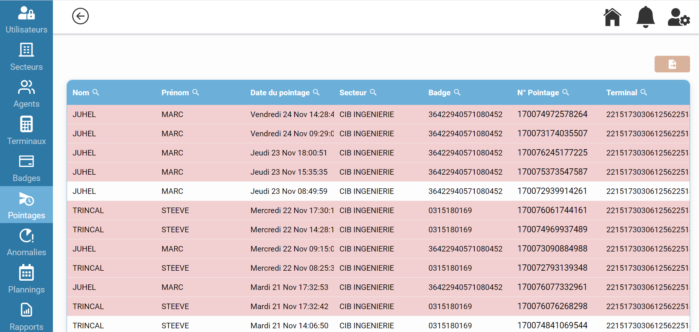
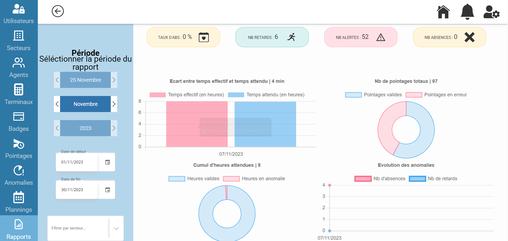

Notre application offre une solution intuitive et efficace pour le pointage des salariés sur les terminaux de paiement bancaires. La refonte complète du processus de pointage vise à améliorer l'expérience utilisateur tout en garantissant la précision et la fiabilité des données.

Un des points forts de notre application est la gestion avancée des plannings. Les responsables RH peuvent créer des plannings personnalisés en fonction des besoins opérationnels de l'entreprise. Cela permet une gestion flexible du temps de travail des salariés.

L'application facilite la régularisation des anomalies de temps. Les responsables peuvent rapidement identifier et résoudre les écarts dans les horaires de travail, assurant ainsi la conformité et l'équité dans le traitement des données de pointage.
Le tableau de bord offre une vue complète des données de pointage, permettant aux responsables RH et aux managers de piloter leur activité en temps réel. Des graphiques interactifs offrent une compréhension approfondie des tendances et des performances.
